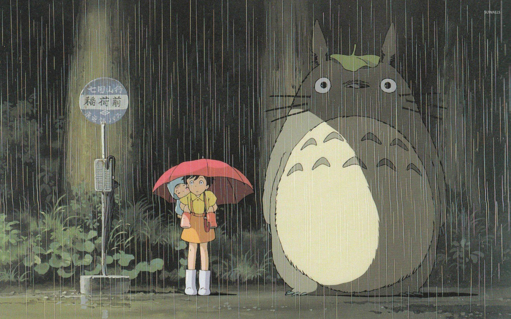
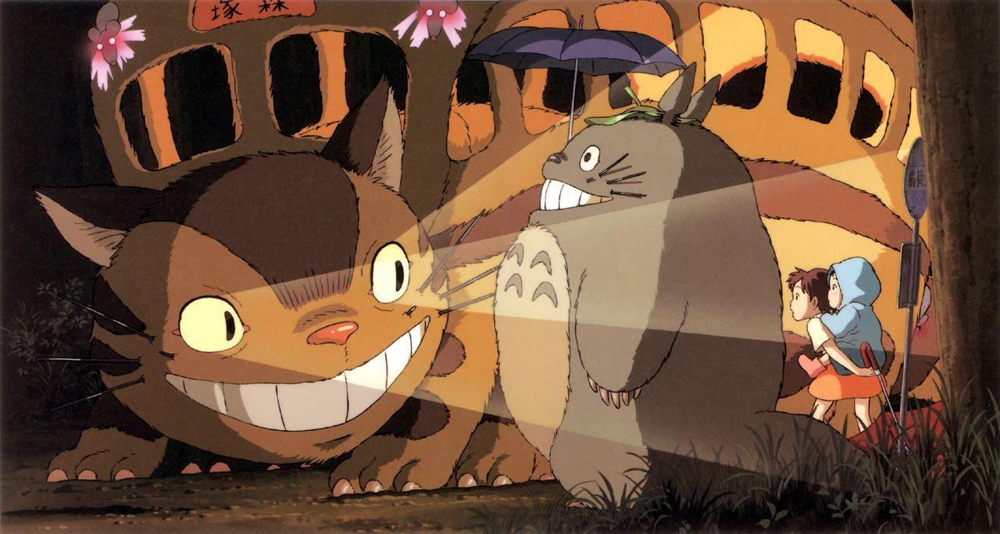
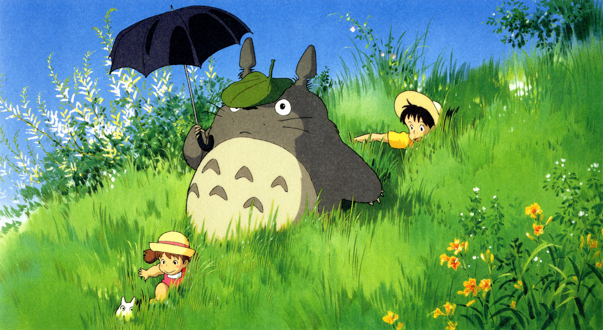
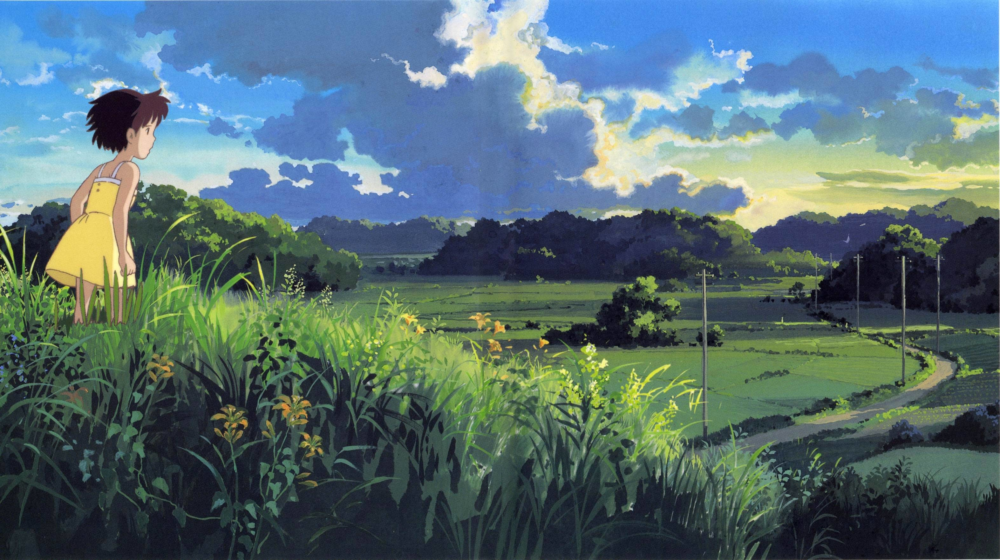
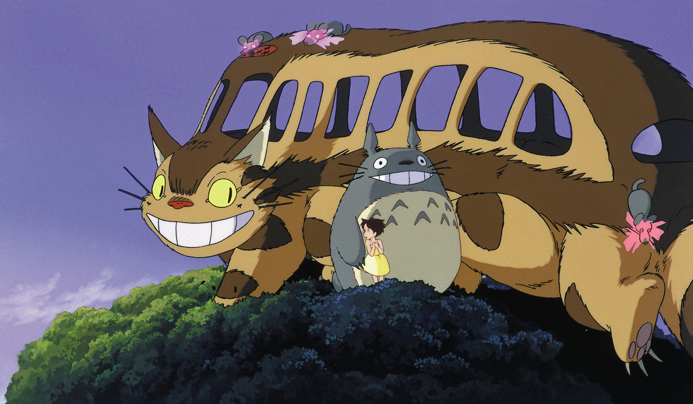
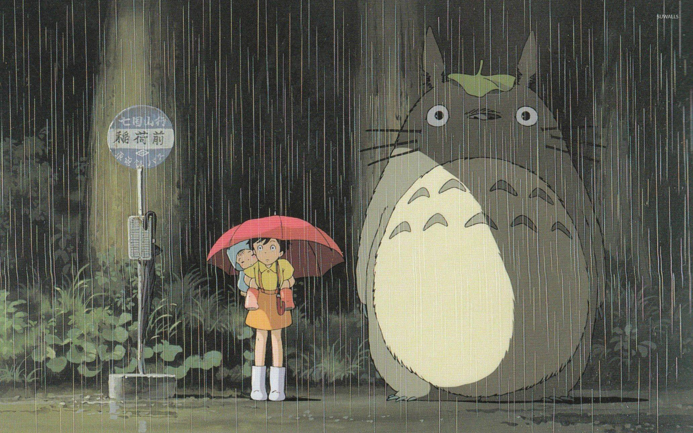
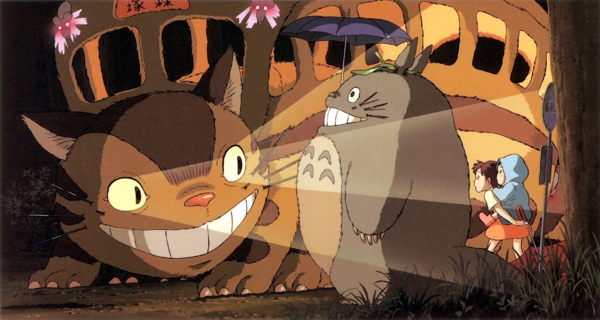
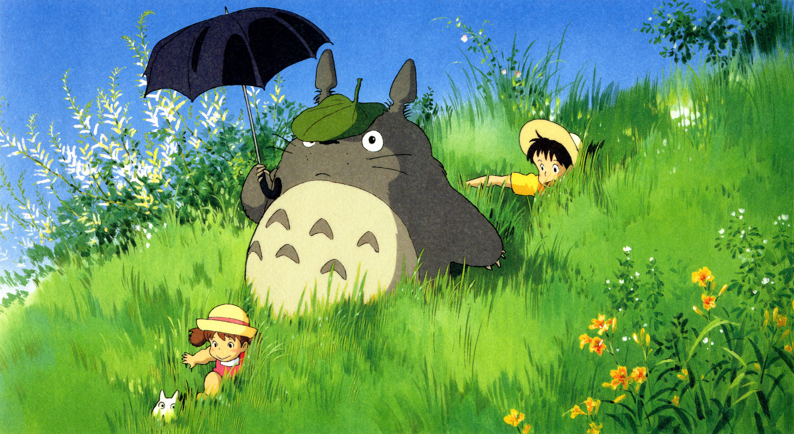
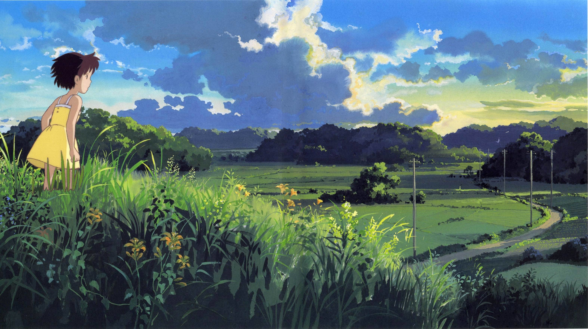
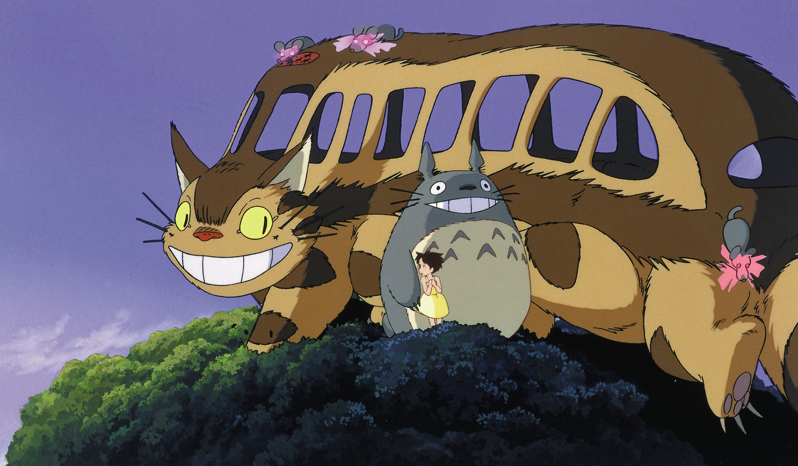

Meu Amigo Totoro é um filme animado de fantasia escrito e dirigido por Hayao Miyazaki e produzido pelo Studio Ghibli em 1988. O filme conta a historia das duas jovens filhas (Satsuki e Mei) de um professor e suas aventuras com espíritos da floresta amigáveis no Japão pós-guerra rural.